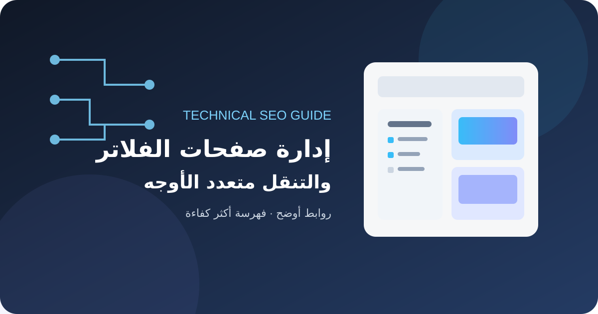
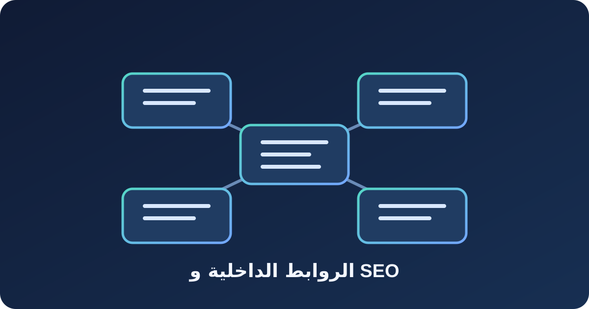
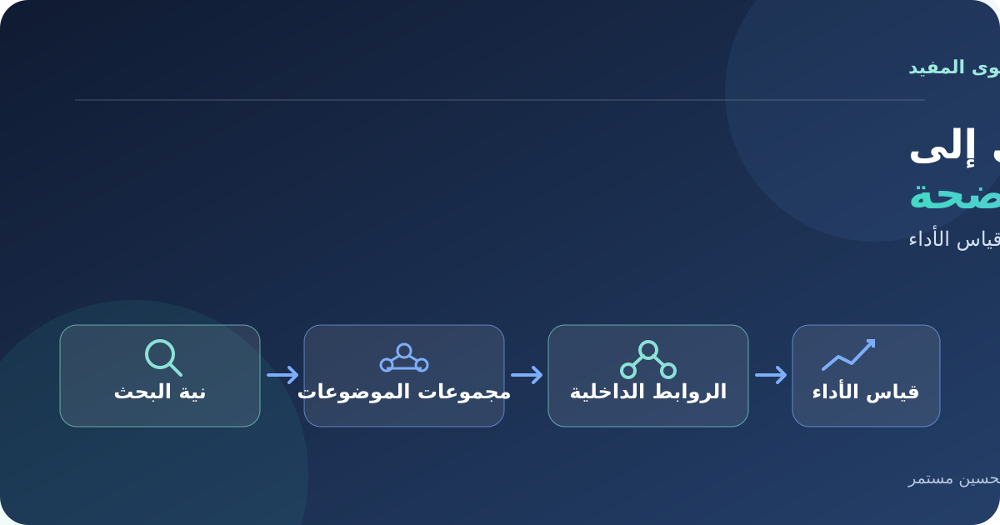
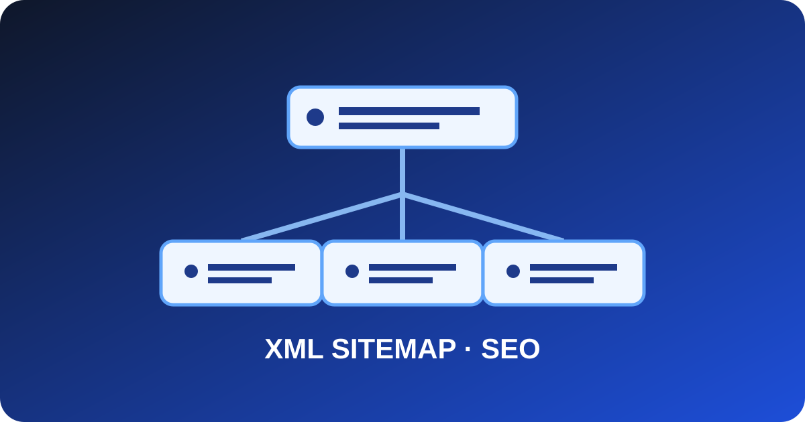

دليل تحسين محركات البحث SEO للمواقع
ابدأ بالبحث عن الكلمات المفتاحية وفهم نية الباحث، ثم حسّن محتوى صفحاتك وبنيتها التقنية وروابطها الداخلية، وتابع الفهرسة والأداء في Google Search Console لتبني تجربة مفيدة يسهل على الزوار ومحركات البحث فهمها.

جميع المقالات في SEO
اختر مقالًا لقراءة الدليل كاملًا.
أخطاء الفهرسة في Google Search Console: التشخيص والإصلاح
دليل عملي لفهم تقارير الفهرسة والتمييز بين الاستبعاد المتوقع والأخطاء التي تحتاج إلى إصلاح.
اقرأ المقال
SEOالروابط الداخلية وSEO: بناء بنية تربط صفحات الموقع
دليل عملي لتحسين الروابط الداخلية، وتنظيم بنية الموقع، واختيار نصوص الروابط، واكتشاف الصفحات المعزولة والروابط المكسورة.
اقرأ المقال
SEOاستراتيجية محتوى SEO في 2026: دليل عملي
تعلم بناء استراتيجية محتوى SEO في 2026: من فهم نية البحث وتصنيف الموضوعات إلى الروابط الداخلية وقياس أداء المقالات.
اقرأ المقال SEOتحسين المواقع لمحركات البحث في 2026: دليل شامل للمحتوى والأداء والفهرسة
دليل عملي لتحسين المحتوى والفهرسة والروابط الداخلية وسرعة الموقع وقياس نتائج SEO في 2026.
اقرأ المقال SEOSchema Markup للمقالات: كيف تستخدم البيانات المنظمة بطريقة صحيحة
شرح عملي للبيانات المنظمة والمخططات المناسبة للمقالات.
اقرأ المقال SEO
SEOGoogle Search Console: دليل عملي لتحليل النقرات ومرات الظهور وتحسين صفحات موقعك
دليل عملي لتحليل النقرات ومرات الظهور والاستعلامات والصفحات في Google Search Console، وتحويل البيانات إلى قرارات تحسين SEO.
اقرأ المقال SEO
SEOتحسين الصور لمحركات البحث: دليل SEO للصور وسرعة الموقع
دليل عملي لتحسين الصور عبر أسماء الملفات والنص البديل والصيغ الحديثة والأبعاد والتحميل الكسول وقياس الأداء.
اقرأ المقال SEO
SEOوسم hreflang في SEO: دليل المواقع متعددة اللغات والمناطق
تعلم إعداد hreflang للمواقع متعددة اللغات والمناطق، وربط النسخ البديلة، واستخدام رموز اللغة والمنطقة، واكتشاف الأخطاء الشائعة.
اقرأ المقال SEO
SEOJavaScript SEO: دليل فهرسة المواقع المعتمدة على JavaScript
دليل عملي لفهم عرض صفحات JavaScript وتحسين المحتوى والروابط والبيانات الوصفية واختبارها في محركات البحث.
اقرأ المقال SEOSEO للتنقل متعدد الأوجه: إدارة صفحات الفلاتر ومنع تضخم الفهرسة
دليل عملي لإدارة صفحات الفلاتر والترتيب في المتاجر والمواقع الكبيرة، وضبط الروابط والزحف والفهرسة دون إهدار ميزانية الزحف.
اقرأ المقال
SEOدليل XML Sitemap وSEO: إنشاء خريطة موقع تساعد محركات البحث
دليل عملي لبناء خريطة XML Sitemap نظيفة، واختيار عناوين URL المناسبة، وإرسالها ومراقبة أخطائها في Google Search Console.
اقرأ المقال SEO
SEOملف robots.txt: دليل الإعداد الصحيح لتحسين SEO
دليل عملي لإنشاء ملف robots.txt وفهم قواعد Allow وDisallow والفرق بين الزحف والفهرسة واختبار الملف.
اقرأ المقالSEOوسم Canonical في SEO: دليل عملي لتوحيد عناوين الصفحات
تعلم كيف تختار عنوان URL الأساسي وتستخدم rel=canonical لتقليل التباس النسخ المتشابهة ومراجعة الأخطاء الشائعة.
اقرأ المقال SEO
SEOخريطة الموقع XML: طريقة إعداد Sitemap مفيدة لمحركات البحث
دليل عملي لاختيار الصفحات التي تستحق الظهور في خريطة الموقع وإنشائها واختبارها وتجنب الأخطاء.
اقرأ المقالأسئلة شائعة عن تحسين محركات البحث
كم يستغرق ظهور أثر تحسين SEO؟
يختلف ذلك بحسب الزحف والفهرسة والمنافسة والتغييرات؛ لا توجد مدة مضمونة، لذا تابع البيانات الفعلية.
هل تكفي الكلمات المفتاحية لتحسين الترتيب؟
لا. يجب تلبية نية الباحث بمحتوى مفيد وبنية تقنية سليمة وروابط داخلية واضحة وتجربة استخدام مناسبة.
هل الفحص الآلي يضمن صحة الصفحة؟
يساعد الفحص على اكتشاف مؤشرات ومشكلات محتملة، لكنه لا يغني عن مراجعة المحتوى والفهرسة والبيانات الفعلية.
جرّب محلل SEO ومولد الوسوم الوصفية ومولد robots.txt، وراجع النتائج قبل النشر.
أدلة مرتبطة ومراجع موثوقة
انتقل من مراجعة الوسوم إلى معالجة الجوانب التقنية المرتبطة بها:
تابع التعلّم في مجالات قريبة
انتقل من أساسيات SEO إلى الأدوات والتقنيات التي تساعدك على تحسين موقعك.